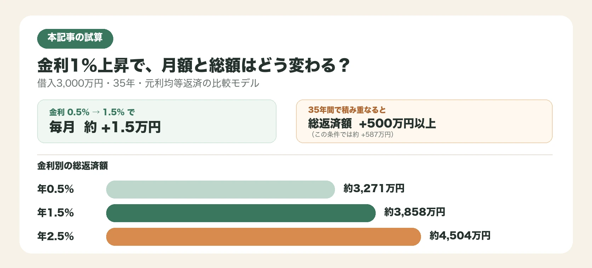

「変動金利が上がるかもしれない」というニュースを見ても、自分の住宅ローン返済にどう関わるのか、実感しづらいという方は多いのではないでしょうか。この記事では、金利1％の違いが毎月の返済額・総返済額にどう表れるかを具体的な試算で示し、今のうちに確認しておきたいポイントを整理します。
1. 同じ家でも、借入条件で支払総額は変わる
同じ物件を購入しても、借入額・返済期間・金利タイプの組み合わせによって、支払総額は数百万円単位で変わることがあります。住宅ローンは、物件価格だけでなく、返済条件まで含めて確認することが大切です。
とりわけ近年は、長く続いた低金利の局面から、金利の動向が注目される局面に移りつつあります。変動金利型の住宅ローンを利用している方にとって、「金利が今後どう動くか」は他人事ではありません。
2. 金利1％の違いを数字で見る
具体的な試算で見てみましょう。借入額3,000万円、返済期間35年、元利均等返済、ボーナス払いなしという条件で、返済開始から完済まで金利が変わらない比較モデルとして本記事で試算します。手数料・保証料などは含みません。
| 金利 | 毎月の返済額（目安） | 総返済額（目安） |
|---|---|---|
| 年0.5％ | 約7万8千円 | 約3,271万円 |
| 年1.5％ | 約9万2千円 | 約3,858万円 |
| 年2.5％ | 約10万7千円 | 約4,504万円 |
金利が1％上がるごとに、毎月の返済額は約1万5千円程度、総返済額では500万円以上変わります（試算条件により変動）。「1％」という数字だけを見ると小さく感じますが、35年という長い期間で積み重なると、決して小さくない差になることがわかります。

試算条件：一般的な元利均等返済の計算式に基づく本記事の試算。注：返済開始から完済まで同一金利とした比較例です。手数料・保証料などは含みません。将来の金利推移を予測するものではありません。
3. なぜ影響を実感しにくいのか
金利変動の影響を実感しにくい理由はいくつかあります。
理由①：変化が毎月少しずつ起こる 変動金利型の元利均等返済では、金利が見直されても毎月の返済額が急に大きく変わらないよう、5年ごとに返済額を見直す「5年ルール」や、見直し後も直前の1.25倍を超えないようにする「125％ルール」などの仕組みを設けている金融機関があります。このため、金利が上がっても実際の返済額の変化を体感しにくい場合があります。
理由②：返済額は変わらなくても、元本の減り方は変わる 仮に毎月の返済額が変わらなくても、金利が上がれば返済額のうち利息が占める割合が増え、元本の減るペースは遅くなります。見た目の返済額だけでは、ローンの実態を把握しきれないことがあります。
理由③：将来の話として先送りしがち 「まだ上がっていないから」「今は大丈夫」と、確認を先送りにしてしまうことも、影響を実感しにくくしている一因です。
4. 今確認するのは3つだけ
すべてを一度に把握しようとせず、まずは次の3つを確認することをおすすめします。
- 自分のローンタイプ（変動金利か固定金利か）。契約時の書類や金融機関のマイページで確認できます。
- 現在の借入残高と、残りの返済期間。年に一度送られてくる返済予定表や残高証明で確認できます。
- 金利が上がった場合の返済額シミュレーション。多くの金融機関が公式サイトで簡易シミュレーターを提供しています。
これらを確認したうえで、必要であれば繰り上げ返済や借り換えの検討、家計全体の見直しを考えるという順序になります。
5. 急がず、家計と住まいの計画を見直す
金利の動向に不安を感じても、慌てて大きな決断をする必要はありません。借り換えには手数料がかかりますし、繰り上げ返済にはメリットとデメリットの両面があります（第11回「50代人口の約3割に達するNISA口座。住宅ローンが残るなら、何を優先する？」参照）。
大切なのは、まず自分の状況を正確に把握し、そのうえで家計全体──修繕費の備え、老後の生活設計、教育費の終わりのタイミングなど──と合わせて検討することです。判断に迷う場合は、住宅金融支援機構の相談窓口や、独立系のファイナンシャルプランナーなど、中立な立場の専門家に相談することも選択肢です。